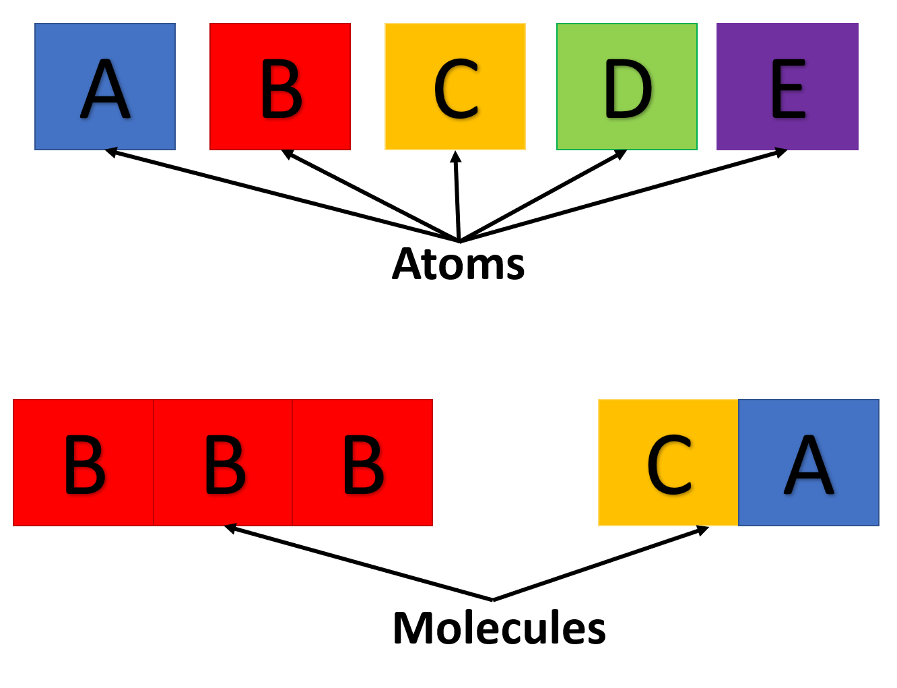
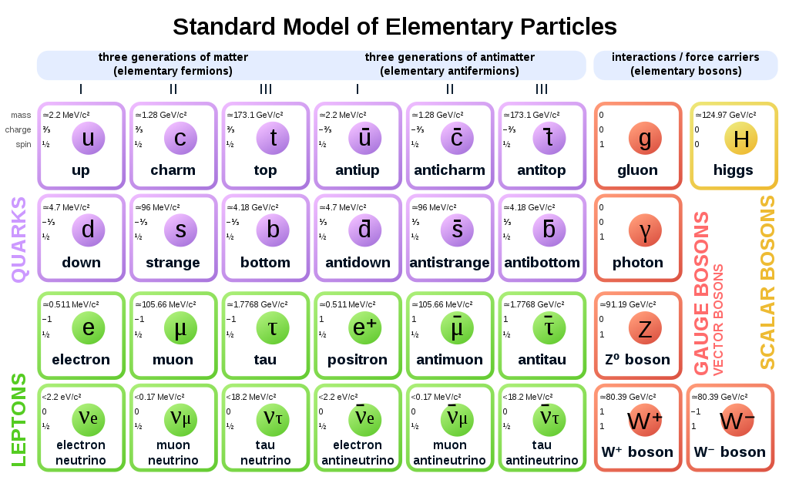

Overview of WC3m
Part of the fourth Wave Learning Festival, a course on Water, Chemicals and more with Computers for Chemistry, better known as WC3m. A computational chemistry course aimed at middle school students.
Course Description
This course is about learning the superpowers needed to make rules which are consistent with the world around us and then using computers to simulate reality. Imagine watching a drop of water freeze, then programming a computer to do just that, and then extending it to a huge block of complicated liquids! We will cover the basics of atoms, molecules and the granular nature of the world, as well as see how naturally these concepts can be expressed in the language of computers and math. By the end of this course you will have a strong intuitive understanding of chemistry and computers, with the ability to critically discuss scientific directions. No prior information of coding or chemistry required!
Teachers
Rohit Goswami
By day, Rohit is a doctoral researcher at the University of Iceland working on topics at the intersection of quantum chemistry and machine learning under the aegis of the Faculty of Physical Sciences. At other times, he can be found dispensing (often unasked) wisdom online and also volunteering to spread the gospel of reproducible and accessible computing. As a certified Carpentries instructor and maintainer, he is excited to reach out further to the wider community and provide insights into the latest tooling advances. Bitten early by the teaching bug, he is a passionate advocate of the beauty and universal accessibility of knowledge and information, and has taught for the Carpentries (as a instructor and maintainer) along with other engagements. A true product of the internet age glut of information has instilled him with a belief that all topics can be best understood with the help of computers and is excited to be able to bring the physical world (of molecules, water, reactions and more!) to be beholden to his students.
Amrita Goswami
Amrita is a PhD student at the Indian Institute of Technology in the Department of Chemical Engineering. Her work focuses on high performance computing for nucleation simulations including systems undergoing shear and confined systems. The ability to study complex systems from first principles with the help of computers and to be able to reason rules out which directly impact the world has captivated her from an early age, and she believes an early understanding of these concepts are both crucial and (can be) easily accessible. She has been a teaching assistant at her institute for several years, and looks forward to interacting and teaching students who would like to learn more about the world and how to control it!
Syllabus
- What are the building blocks of reality?
- Basic Terms and Definitions
- Electrons
- Atoms and Molecules
- Basic Terms and Definitions
- Time and Space
- Simulations
- Newton’s Laws
- Trajectories
- Equilibria
- System state
- Mathematical modeling
- Equations
- Constraints
- Programming Basics (Python+Colab)
- Scopes
- Variables
- Functions
- Objects
- Libraries
- Nobel Gases (pyLAMMPS and ASE)
- Argon and the Lennard Jones
- Potential Energy Surfaces
- Equilibration
- Intuition for many dimensions
- Initial states and equilibrium
- Quantum Considerations
- Coarse-graining and PES
- Numerical Methods (Physics to a Computer)
- Calculus → Difference methods
- Visualizations
- OVITO
- VMD and ASE
- Summary statistics
- Water
- Introduction
- Systems
- Model Zoo
- High Performance Computing
- Heterogeneous Computing
- Limiting Approximations for the Real World
- How to (not) simulate a truck
- The time-length scale issue
- Localized phases
- Confinement
- Reactions
- Equilibrium constraints
- The role and (false) supremacy of machine learning
- Machine learning to a computer
- Functions all the way down
Logistics
We will leverage several tools for this course, we have ordered them in order of access.
Annotations
We will use Hypothesis for our course. Though external students are not going to be able to sign up for the Hypothesis group, feel free to create your own.
Installing Hypothesis
- The video outlines obtaining the extension for Google Chrome
- Essentially, follow instructions here: https://hypothesis.is
Using Hypothesis
- We have a reading group for this class
- The video below gives an overview of how to enter and use the group
Sharing Code with Trinket
- Go to trinket: https://trinket.io/python
- There is no need to have an account
- Code things
- Use the share button to get a link to post on Ed
Working with Google Colab
- Sign into Google
- Go here: https://colab.research.google.com/
- Create a new notebook
Videos
We will add the pre-recorded lectures after each lecture, along with links to the slides.
Edstem
For interacting with the students, we will use Ed, unfortunately this is not for external students.
Lecture I: Building Blocks
Formal Language
Some parts of this document, and the course on whole might seem a little more “dry” than normal. The reason behind this is the need to be unambiguous (have only one meaning) while describing our basic building blocks.
Like a pretty house built on sturdy bricks, each brick need not be pretty individually, but is simply the most stable base structure.
This rigor in our thoughts and expressions will be beneficial when we start programming as well!! (computers are not very creative)
That said, analogies and critical thinking are what make us human!
Atoms
- Atoms are (for us) the smallest, stable, indivisible particles of matter
- Matter in our lexicon (grammar) is anything which exists (observed or not!)
To understand this better, consider:
An analogy for atoms is how a shirt might seem smooth, even though it is made of fibers
Molecules
Given that atoms are a single object, how do these combine to give various other kinds of objects?
Let us imagine that we are learning a new language.
- The atoms like the alphabet
- The molecules are like words
- Larger molecules are like sentences
|  |
|---|
| Atoms and molecules formed in analogy to language |
Creating words from letters requires a c h a n g e in spacing to be understood! This is what a bond does.
Electrons
Electrons are tiny charged, almost mass-less particles, possibly best known as carriers of electricity. When electrons move, then we have electricity.
| A more visible form of electricity |
However! The most important use of electrons is to distinguish different atoms. Simply by varying the number of electrons an atom has, the atom changes its character and properties completely.
 |
|---|
| Can you tell which ones are protons (positive), neutrons (neutral) and electrons (negative)? |
What about the tables?
A common approach to understanding science is (for physics) to keep going smaller and smaller, into the “standard particles” as well as (for chemistry) by building up elements and compounds using the “periodic table of elements”.
 |
|---|
| The periodic table of elements |
|  |
|---|
| The standard particle model of physics |
We won’t be using them :)
Electrons move the fastest (for us) and cause the most change (through reactions and conductivity), so the slower, and heavier neutrons and protons are not of interest to us.
Anything can be a periodic table, so it does not fit our rules of Formal Language above, and is hard for computers. For a computer, all tables are the same!
 |
|---|
| A fun periodic table |
W1L1: Video & Slides
Video
The video is meant to be watched after a quick run through of the notes:
Jamboard
Slides
- Google Slides (embeded below)
Lecture II: Time and States
Rates and Time
Consider walking to say, a nearby park, or the supermarket.
If we are to predict how far we can move by walking, then we need to know our starting point, and how many steps we need to take, along with the length of each step, this is all a computer needs as well.
Formally, we have:
- A starting point
- An end point
- A step size
Now with our understanding of representations, we can understand that this means we can do things at each step, say, plant a flower. In this case, the function represents planting a flower, the location is determined by our steps, and time is as we experience it.
For completeness, we mention in passing that this is what is known as a first order approximation to the derivative. Like our computer however, this has no inherent meaning for us. We will instead appeal to a more intuitive understanding.
Trajectories
From lecture 1, we are familiar with understanding the description of molecules to a computer, however the concept of time requires an addition of two things:
- A time variable
- (for our studies) a formula of how the system changes at each time
Note that the second point is related to us trying to make the computer description consistent with our own observations.
If we want to check if ice has melted we expect that the “melting” process takes place in our absence, this is something which we need to tell the computer about though!
With that understanding, we will further note that:
- Zero time is when we start making observations
A consequence of this is that if we are unable to describe the system to a computer before the time we start making these observations (describing our data to the computer).
We will return to this concept later, after we formalize our understanding of phase spaces!
Time-steps
For our description above, we did not mention the units of time we are interested in. This is because the unit depends on the nature of the process we are interested in.
This is probably best seen in the video, or the jamboard.
W1L2: Video & Slides
Video
The video is meant to be watched after a quick run through of the notes:
Jamboard
Slides
- Google Slides (embeded below)
Code
For this lesson, and the next, we will be following Trinket’s visual hour of code.
W1L2: Extra Content
About
- From this lesson on-wards we will have some optional material for the class
- Since there is no other resource covering the exact intersection of topics we need, we will split this material into sections
- Each of these will also feature a difficulty or level tag, which should be kept in mind
Feel free however, to use the same hypothesis space to highlight and annotate the reading material! We will answer all questions there (this goes for other course-related reading material you might find as well).
Mathematical Intuition
- The first chapter of Active Prelude to Calculus
Lecture III: Naive Modeling
Modeling
What does an object do? What are the physical properties? A tabulated set of values might tell us relative differences, but we still need to understand what the base component does. This is the art of modeling. Describing the functionality of a system in a manner we can predict. That is all, and it is also exceeding complicated.
W1L3: Video & Slides
Video
From this week on-wards, we will split our videos to cover code and the scientific intuition into separate videos, but do note that both are to be watched.
Scientific Intuition
Programming Intuition
Jamboard
Slides
- Google Slides (embeded below)
W1L3: Extra Content
About
As described previously, do note the following:
- These are completely optional
- Each of these will also feature a difficulty or level tag, which should be kept in mind
Feel free however, to use the same hypothesis space to highlight and annotate the reading material! We will answer all questions there (this goes for other course-related reading material you might find as well).
| Label | Expansion |
|---|---|
| UG | Undergraduate |
| Intro | Introductory |
Computer Science
Note that none of these are required readings and are of general interest. Suggested reading material related to this week would be the first few chapters of all three, in order perhaps, up-to functions.
- Computer Science Circles (Intro)
- Think like a Programmer in python (Intro)
- Structure and Interpretation of Computer Programs with Python (UG) This is a bit of a tough read. It is meant more as an introduction to computers and their work than programming. undergraduate course which mostly introduces computer science more than programming in particular. Dry but complete.
W1L4: Video & Slides
Video
TBA
Jamboard
- In-Class
- Pre-recorded (TBA)
Slides
- Google Slides (embeded below)
W2L5: Video & Slides
Video
TBA
Jamboard
- In-Class
- Pre-recorded (TBA)
Slides
- Google Slides (embeded below)
W2L6: Video & Slides
Video
TBA
Jamboard
- In-Class
- Pre-recorded (TBA)
Slides
- Google Slides (embeded below)
W3L7: Video & Slides
Video
TBA
Jamboard
Slides
TBA